Station 01
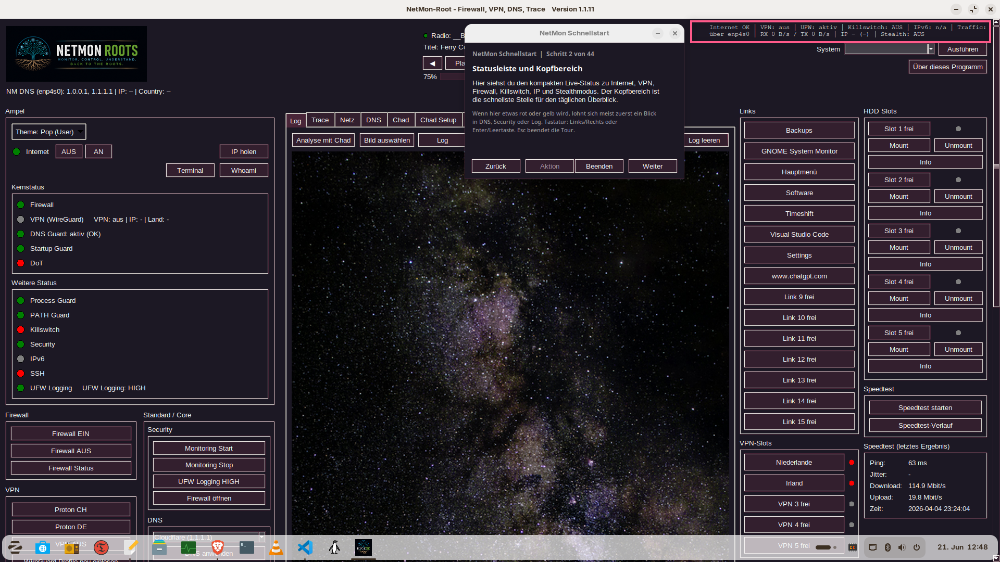
Statusleiste und Kopfbereich
Dieses Motiv zeigt den kompakten Schnellueberblick: Internetstatus, VPN, Firewall, Killswitch, IPv6, Traffic sowie den direkten Einstieg in die Tour.
Tour-Stationen

Dieses Motiv zeigt den kompakten Schnellueberblick: Internetstatus, VPN, Firewall, Killswitch, IPv6, Traffic sowie den direkten Einstieg in die Tour.
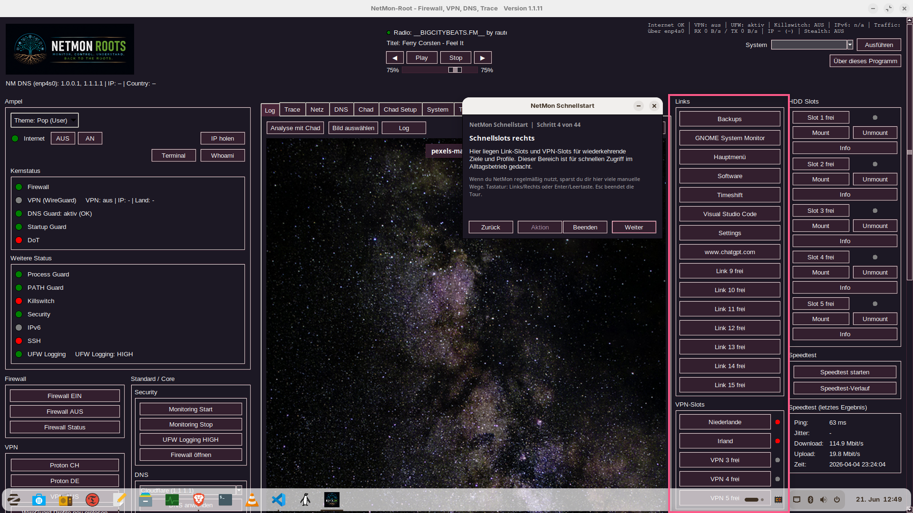
Diese Station zeigt die rechte Schnellzugriffsleiste mit frei belegbaren Link-Slots, VPN-Slots und weiteren Direktaktionen fuer wiederkehrende Arbeitsablaeufe.
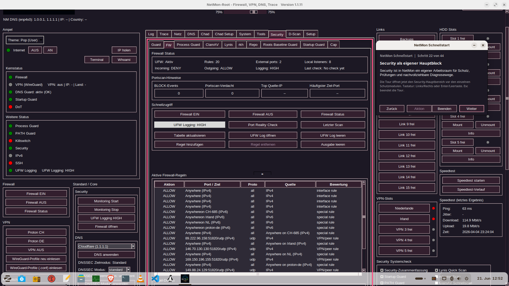
Der Security-Bereich ist ein eigener Arbeitsraum mit Firewall-Status, Portscan-Hinweisen, UFW-Aktionen und dem Sprung in weitere Sicherheitsmodule.
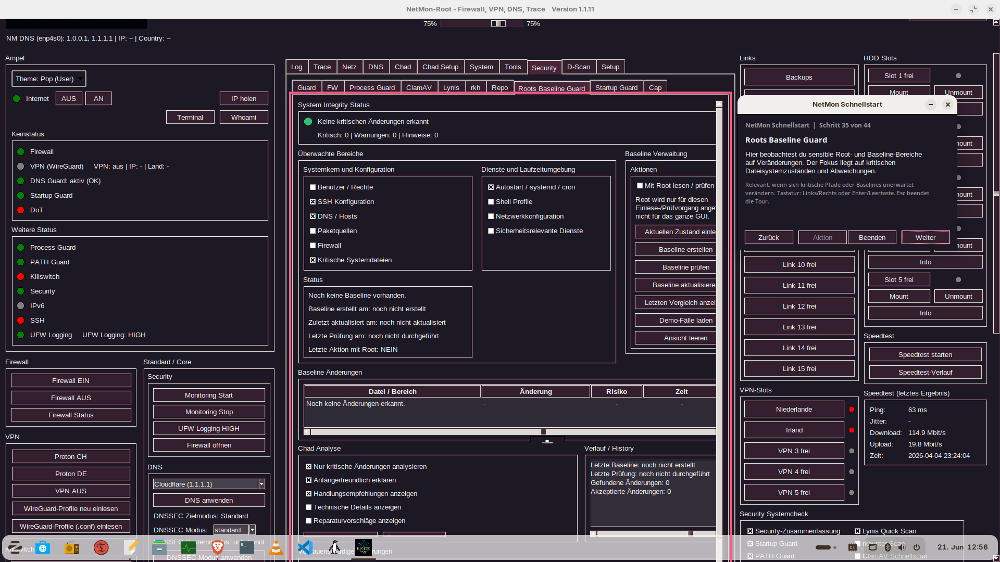
Hier wird die strukturelle Integritaet sichtbar: ueberwachte Kernbereiche, Baseline-Verwaltung und Historie fuer Aenderungen an sensiblen Systempfaden.
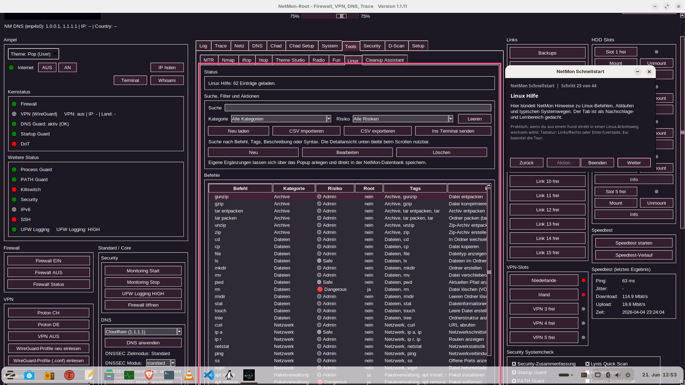
Der Hilfe-Tab dient als Nachschlagewerk mit Suchfunktion, Kategorien, Risiko-Filtern und direkt erweiterbaren Linux-Befehlen und Fachbegriffen.
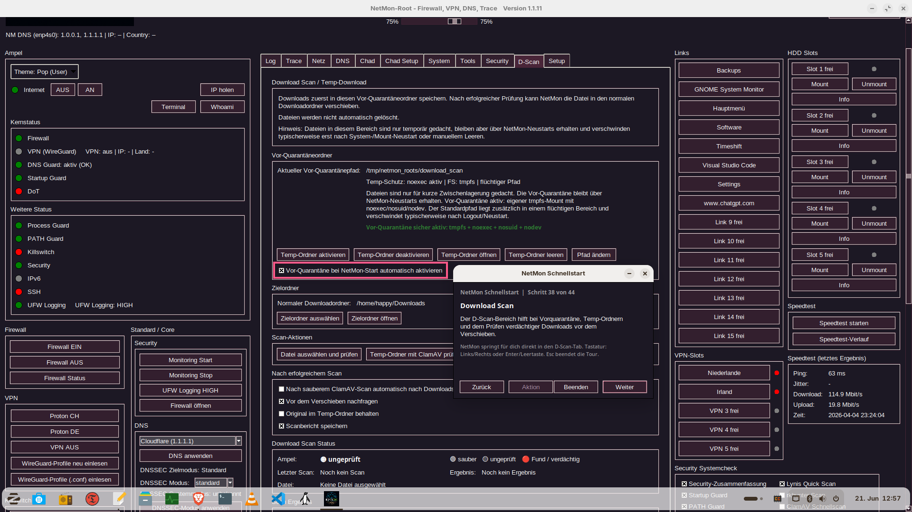
Diese Station zeigt den Sicherheitsweg fuer Downloads: Temp-Ordner, Vorquarantaene, Scan-Aktionen und kontrolliertes Verschieben nach erfolgreicher Pruefung.
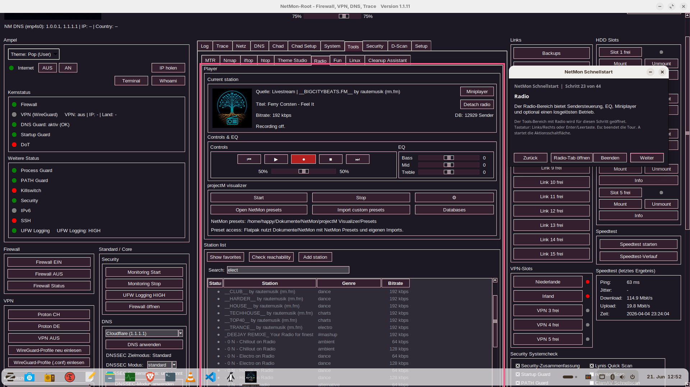
Der Radio-Bereich zeigt Sendersteuerung, EQ, Record, Miniplayer, Detach-Funktion und projectM-Visualizer als entspanntere Seite von NetMon.
Weitere Einblicke
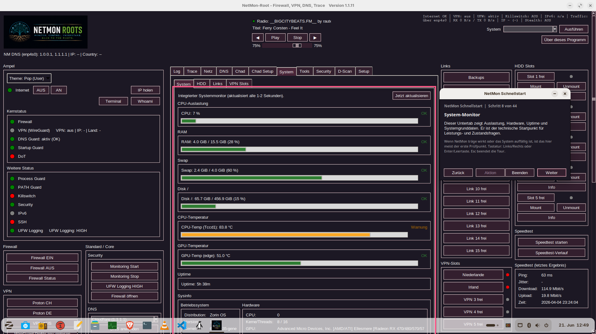
CPU, RAM, Swap, Laufzeit und Temperaturen werden direkt in der App als technischer Startpunkt sichtbar.
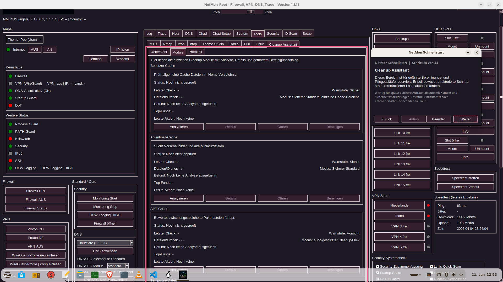
Das Motiv zeigt den gefuehrten Bereinigungsbereich mit Cache-Modulen, Analyse-Status und strukturierten Aktionen fuer spaetere Aufraeumablaeufe.
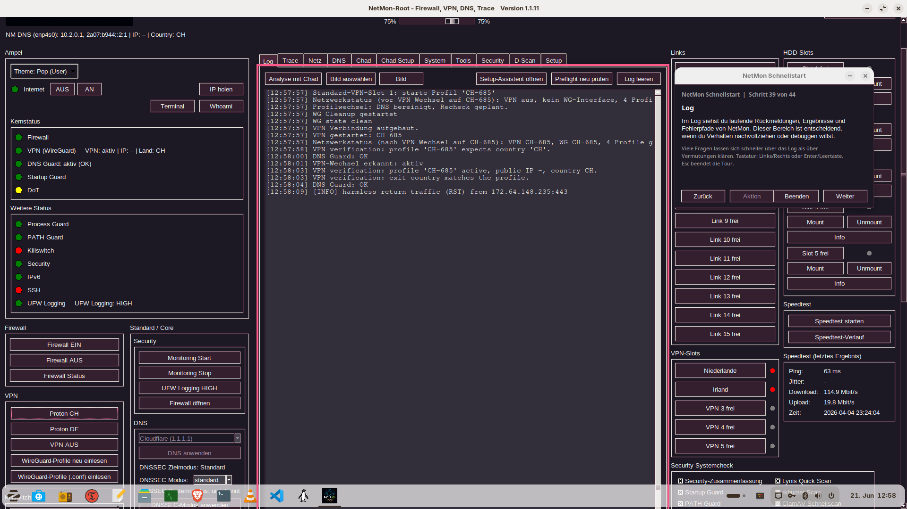
NetMon haelt technische Ausgaben, Statuspruefungen und nachvollziehbare Diagnosewege sichtbar im Fenster zusammen.
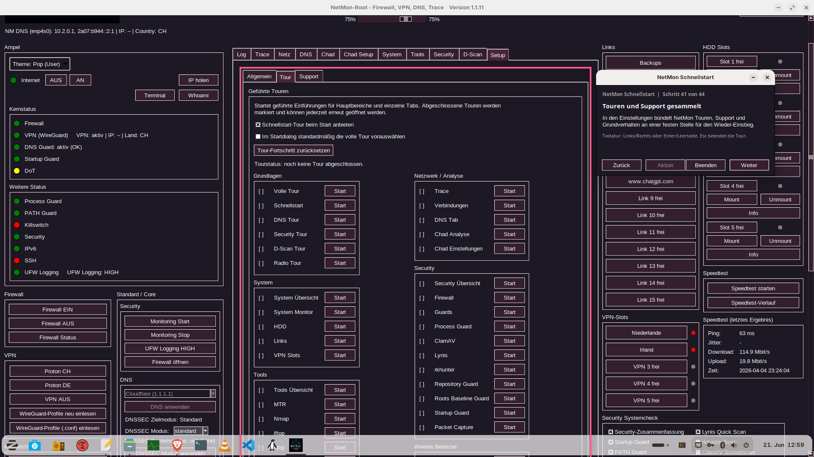
Hier buendelt NetMon die gefuehrten Touren, den Tour-Fortschritt und den Support-Wiedereinstieg an einer festen Stelle im Setup-Bereich.
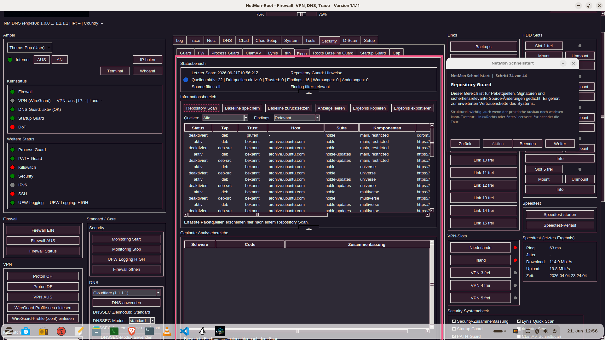
Die Ansicht zeigt Paketquellen, Vertrauensstatus, Filter und Exportwege fuer sicherheitsrelevante Source- und Repository-Pruefungen.
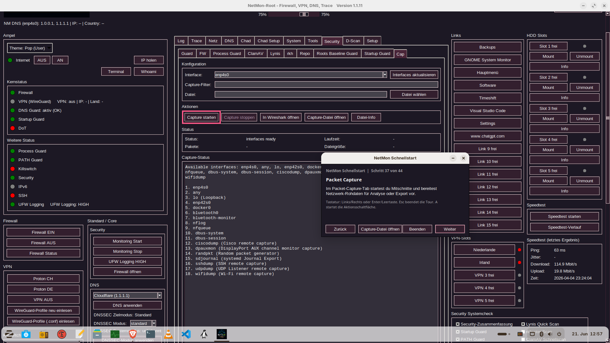
Diese Aufnahme zeigt den Mitschnitt-Bereich mit Interface-Auswahl, Capture-Steuerung, Rohdaten-Ausgabe und direktem Uebergang zu Wireshark.